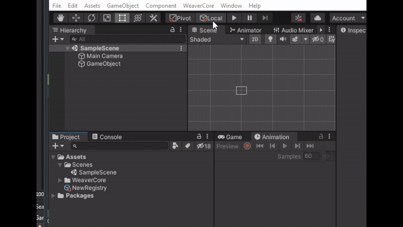
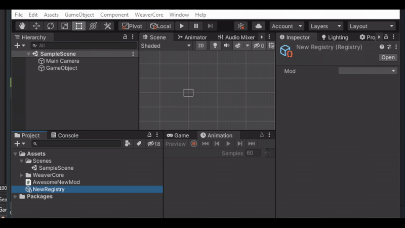
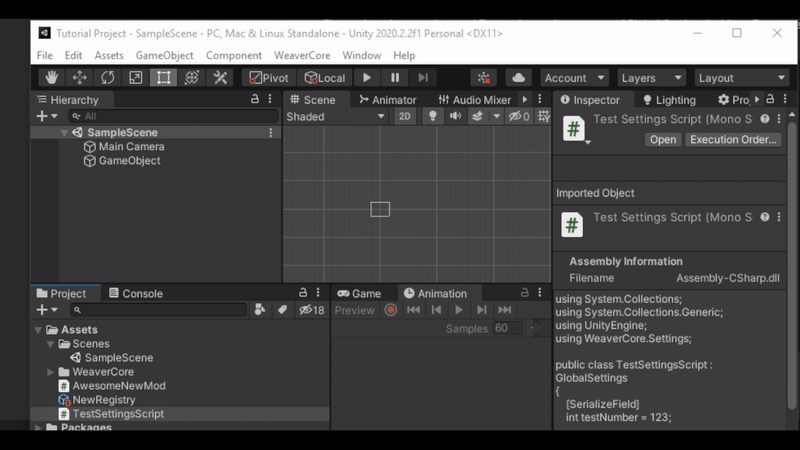
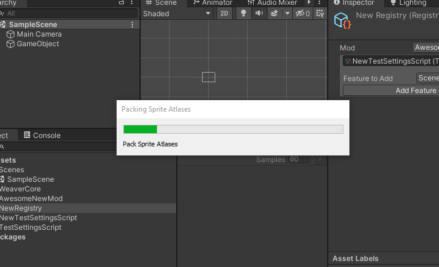
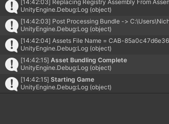
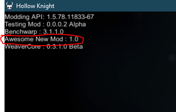

Setting Up A Registry
In WeaverCore, the way new major content is added to the game (such as new enemies, scenes, bosses, etc) is done via a Registry. A registry is a object that contains a list of all the major things you will be added to the game. When your mod loads up in-game, the registries that are a part of that mod will also be loaded.
To create a Registry, click on WeaverCore -> Create -> Registry on the top menu bar:

This will create a blank Registry that we can start adding content to. However, notice that the new registry has no Mod configured yet:

To fix this, the next order of business is to create a mod class. If you are familiar with the Hollow Knight Modding API, we need a mod class in order to properly load our mod.
To create a new mod, go to WeaverCore -> Create -> New Mod, and from there, you can create a new script for your mod class:

You now have a default mod class that you can modify:

With this new mod class created, you can now select it in the Registry:

The registry is now all setup! Lets test if it's working by adding a feature to it. We will quickly create a "Global Settings" object so we can add a settings panel to the in-game settings menu. We will go over more detail on GlobalSettings later, but for now, we will use a simple example. To create one, first create a new script in the Assets folder, and put the following contents in it:
using System.Collections;
using System.Collections.Generic;
using UnityEngine;
using WeaverCore.Settings;
public class TestSettingsScript : GlobalSettings
{
[SerializeField]
int testNumber = 123;
[SerializeField]
string testString = "Cool String";
[SerializeField]
bool testToggle = false;
}
Now, go to "WeaverCore -> Create -> Global Settings" to create a new global settings object based on "TestSettingsScript":

Then, take the newly created object and add it to the Registry. You can add it by selecting the feature you want to add in the "Feature to Add" list, clicking on "Add Feature", and dragging the object into the slot:

What the "Global Settings" object will do in-game is add a new section to the WeaverCore Settings Menu that will allow us to configure three different fields (testNumber, testString, and testToggle).
Building the Mod
With the feature now added, the final step is to build the mod. This is done by going to "WeaverCore -> Compilation -> Mod" and opening up the Mod Builder Window.

Note
If you notice that some of the platform support options are greyed out, that means you don't have the proper platform modules installed. You can download and install the platform modules you need here : https://unity3d.com/unity/whats-new/2020.2.2
When you are ready to build, click on "Compile", and WeaverCore will begin it's build process (this may take a while to complete):

Warning
Make sure you don't minimize the Unity Editor while it's building. If the window doesn't have focus, it may not build correctly
You will know the build was successful when you see "Asset Bundling Complete" in the console

With the build completed, you can now start up Hollow Knight, and you should see your mod show up in the Mod List on the top left corner

And, since we added a "Global Settings" object as a feature to the mod's registry, we can now go over to the WeaverCore Settings Menu, and see the global settings the mod has added:

Now that you know the basics on how WeaverCore works, I can now show you how to add many other new features to the game (new enemies, bosses, scenes, etc)